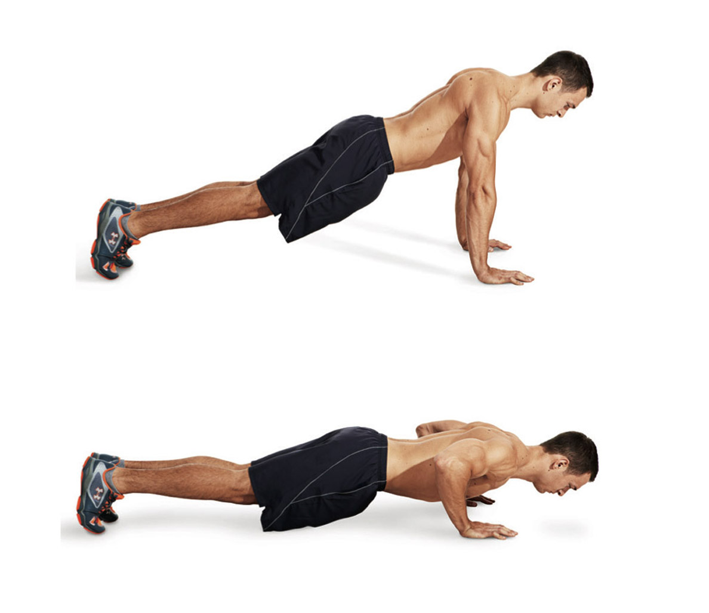
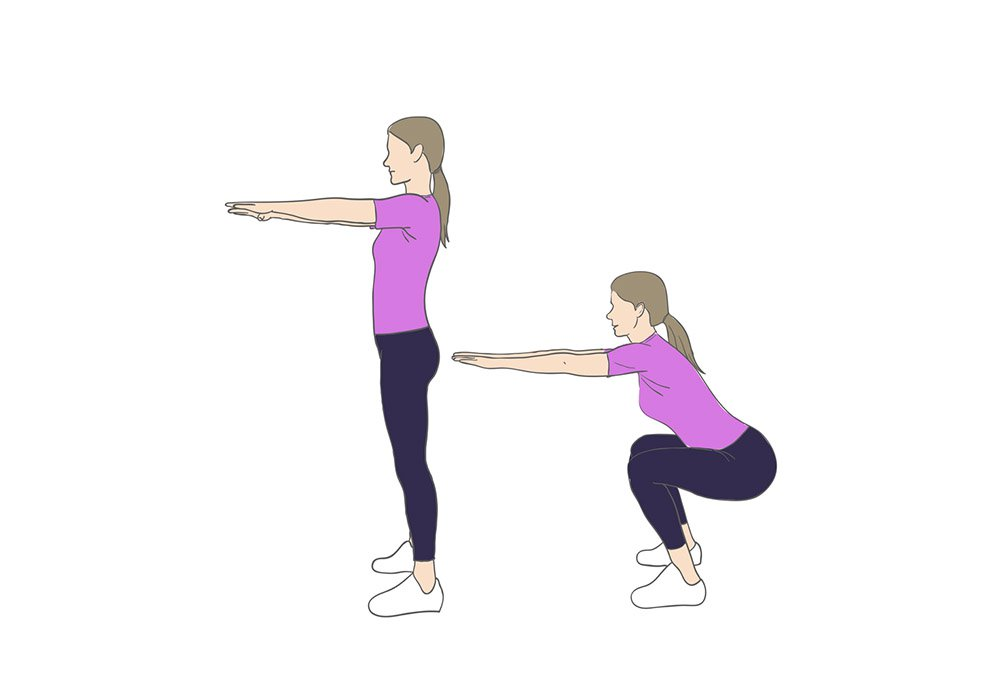

WorkSmarter not harder
Thinking about a push-up as a moving plank is actually really helpful. The correct setup for a standard push-up is to position your hands shoulder-width apart, or a little bit wider. As you bend your elbows and lower toward the ground, your elbows should be at about a 45-degree angle to your body. While arms out at a 45-degree angle is considered a standard push-up form, the angle that's most comfortable for you may be slightly different so it's fine to adjust keeping your arms in a tad closer to your body or bringing them out a little wider based on how your shoulders and arms feel. "It's hard to tell people exactly where they need to be," Stokes notes, because it depends on different factors like shoulder mobility and where you're strongest. So use 45 degrees as a starting point, but make sure to listen to your body.
As doing the pushups works on your Chest, tricep and shoulder. The pullups take care of the muscles in the back which helps stabalizes posture and for a stronger back. Many beginners may have a hard time doing the pullup since it requires alot of strength to pull ones body weight up. The heavier the individual the the harder the pull up will to be perform. Furthermore the pullups work on the rear dealts which help for a capped shoulder look. To perform the pull up it essential that the individual does static stretches. For example it is beneficial to pull apart the resistance band to open up the shoulders and the lats. After streching is done, it is important to set yourself on the bar so that it is shoulder width apart or outside of shoulder width. This help the development of the width of the back. Next it is essential to have the scapula retracted so that it ensured that most of the pulling is done through the back rather than the biceps. Once you reached the top of the movement, it is recommended to come down slowly and control the movement.
Since the Upperbody has been taken care of by the pullups and pushups, it essential to work the legs since they are the biggest muscle group. The squats are a good exercise to hit the quads, hamstrings and glutes. Even though the body weight squat may be easy for many individuals, it is easy to overload them by using many external factors. To perform the squat it is important to keep your legs slighly out of shoulder width and filling your stomach with air to keep your torso upright. Once the gut is filled with air slowly dip your butt back and keeping your torso upright. Go about parallel to the ground and explode back up while exhailing.
